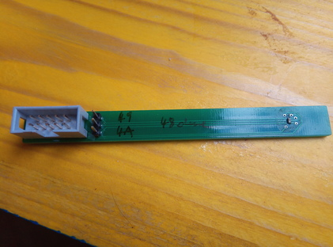
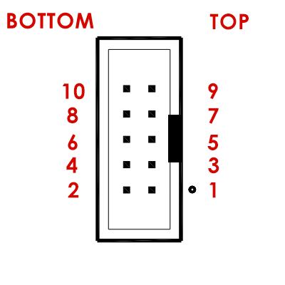
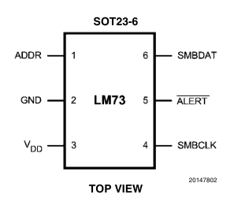

Linux and I2C (using LM73 Temperature Sensor as Slave)#
Overview#
This article shows how you use Linux to communicate with I2C devices.
We use the Rasperry Pi because everything’s easy there. This article’s principles hold unmodified for other devices that run Linux (more handwork might be needed though).
We use the Texas Instruments LM73 temperature sensor, as a placeholder for just about any I2C device
Configuring I2C Master#
The Raspberry has two I2C host controllers (“masters”) built-in. One
of those, i2c-0, is dedicated to display and touch handling and is
of no relevance here.
The other, i2c-1, is for maker’s use. This is what this section is
about.
Enable I2C, Load BCM2835 I2C Master Driver#
By default, on Raspberry Pi OS everything’s off. To turn something on, you configure the bootloader to turn it on. The bootloader will then pass the relevant information to the kernel which will react accordingly - load the appropriate drivers, for example.
In /boot/config.txt insert the following line [1]
…
dtparam=i2c_arm=on
The effect of enabling I2C is that
pins GPIO2 and GPIO3 are not GPIO pins anymore, but rather their alternative configurations as data and clock, respectively, are enabled. See the pinout diagram.
the driver for the Raspberry (BCM2835) I2C master is loaded.
Reboot, and check:
$ lsmod | grep i2c
i2c_bcm2835 16384 0
We can see a userspace representation of the I2C master in sysfs,
sysfs#$ ls -l /sys/bus/i2c/devices/i2c-1
lrwxrwxrwx 1 root root 0 Oct 4 12:43 /sys/bus/i2c/devices/i2c-1 -> ../../../devices/platform/soc/fe804000.i2c/i2c-1
Make I2C Master Visible In Userspace (/dev/i2c-1)#
One of the next steps will be to connect an I2C device to our bus, and
to check if it is actually recognized as such. There is a tool for
that check, i2cdetect (see below),
which requires us to make the I2C master available in userspace as
/dev/i2c-1. Lets to this before we continue.
Load the driver, i2c_dev, manually first to see what is going
on. This will create a character device /dev/i2c-1 which
represents the I2C bus #1.
# modprobe i2c-dev
$ ls -l /dev/i2c-1
crw-rw---- 1 root i2c 89, 1 Sep 29 14:27 /dev/i2c-1
We do not want to load i2c-dev manually everytime the Raspberry
has booted, so we write the module name in /etc/modules,
/etc/modules#i2c-dev
Note
The same is accomplished by creating a dedicated file, say
/etc/modules-load.d/i2c, with i2c-dev in it.
Reboot, and check if /etc/i2c-1 is still there. We will
later see how to detect devices on it
using the i2cdetect tool.
Connect A Slave Device (LM73 Temperature Sensor)#
LM73 Hardware#
LM73 comes in a SOT-23 package which means that it is rather small. Power can be supplied in a range between 2.7V and 5.5V. This is practical since the Pi’s I2C operating voltage is 3.3V; we use the 3.3V rail to power the chip.
The breakout board [5] has a 10-pin IDC header with the following pin assignments:
|
 |  |
Optional: Address Selection#
The LM73 lets you choose between three different addresses, via pin 1.
Left unconnected (floating) |
|
Connected to GND |
|
Connected to VDD |
|
The breakout board takes this into account: a 3 pin header lets you connect pins with a jumper.
Wiring LM73 To The Raspberry Pi#
Given the above IDC header pinout, we can now connect to the Raspberry Pi as follows:
Raspberry Pi Header |
IDC/LM73 |
|---|---|
1 (3V3) |
1 |
6 (GND) |
6 (GND) |
3 (SDA) |
3 |
5 (SCL) |
5 |
i2c-tools/i2cdetect: Diagnostics, Detecting Devices#
Now we use the i2cdetect program from the i2c-tools package to check if
everything’s connected correctly. I omitted the address jumper, so
LM73 pin 1 is left floating - the chip should appear on address
0x48.
Install the i2c-tools package [6],
# apt install i2c-tools
i2c-tools brings a set of low-level programs to manipulate I2C
device registers. Among those, i2cdetect is a tool to “probe” a
bus for devices. Lets probe I2C bus #1 (i.e. /dev/i2c-1),
$ i2cdetect -y 1
0 1 2 3 4 5 6 7 8 9 a b c d e f
00: -- -- -- -- -- -- -- -- -- -- -- -- --
10: -- -- -- -- -- -- -- -- -- -- -- -- -- -- -- --
20: -- -- -- -- -- -- -- -- -- -- -- -- -- -- -- --
30: -- -- -- -- -- -- -- -- -- -- -- -- -- -- -- --
40: -- -- -- -- -- -- -- -- 48 -- -- -- -- -- -- --
50: -- -- -- -- -- -- -- -- -- -- -- -- -- -- -- --
60: -- -- -- -- -- -- -- -- -- -- -- -- -- -- -- --
70: -- -- -- -- -- -- -- --
Voila, everything there - one device at address 0x48 which is the
default LM73 address when you leave the address pins unconnected.
Implementing A LM73 Client In Userspace#
Reading the datasheet thoroughly
[4], one can implement the device’s protocol in
userspace. On the bus device /dev/i2c-1, you kind of connect
to the device’s address (0x48), and send bytes back and forth.
#!/usr/bin/python
import sys, os, fcntl, struct
I2C_SLAVE = 0x0703 # from <linux/i2c-dev.h>
fd = os.open('/dev/i2c-1', os.O_RDWR)
fcntl.ioctl(fd, I2C_SLAVE, 0x48)
os.write(fd, '\x00') # <-- register #0 will be the target of the next read operation
msb_lsb = os.read(fd, 2) # <-- read 2 bytes from temperature register (#0)
msb, lsb = struct.unpack('BB', msb_lsb) # <-- convert 2 bytes ...
print float((msb<<24)|(lsb<<16)) / 65535 / 128 # ... according to data sheet
#include <stdio.h>
#include <stdlib.h>
#include <stdint.h>
#include <fcntl.h>
#include <unistd.h>
#include <sys/ioctl.h>
#include <iostream>
#include <linux/i2c-dev.h>
using namespace std;
int main(int argc, char** argv)
{
int err, dev_fd;
if (argc != 2) {
cerr << argv[0] << " i2c-device" << endl;
return 1;
}
if ((dev_fd = open(argv[1], O_RDWR)) == -1) {
perror("open");
return 1;
}
if ((err = ioctl(dev_fd, I2C_SLAVE, 0x49)) == -1) {
perror("set address");
return 1;
}
/* set register address for next read operation */
uint8_t byte = 0x0;
if ((err = write(dev_fd, &byte, 1)) != 1) {
cerr << err << endl;
perror("write");
return 1;
}
/* read temperature */
uint8_t msb_lsb[2];
if ((err = read(dev_fd, msb_lsb, 2)) != 2) {
perror("read");
return 1;
}
close(dev_fd);
cout << (double)((msb_lsb[0]<<24)|(msb_lsb[1]<<16)) / 65535 / 128 << endl;
return 0;
}
Implementing the device’s protocol in userspace is always possible for I2C devices. See the kernel documentation for detailed information - we are scratching only the surface here.
Using The LM73 Kernel Driver (If Available)#
Many devices are supported by Linux out of the box, and LM73 is no exception. The Linux kernel comes with a driver for LM73 (documentation). Sadly, Raspberry Pi OS does not package that driver, so you have to build your own kernel for this.
Building the Kernel, Enabling LM73#
This is relatively easy; follow the kernel build documentation. In short:
Install prerequisites (as root),
# apt install git bc bison flex libssl-dev make libncurses-dev
Clone the kernel,
$ git clone https://github.com/raspberrypi/linux
$ git branch
* rpi-5.10.y
Massage the configuration,
$ cd linux
$ make bcm2711_defconfig
$ make menuconfig
Apply your changes in the following places:
General Setup / Local version - append to kernel release: add something to differentiate your kernel from the prebuilt kernel. My choice is
-v7l-jfasch.Device Drivers / Hardware Monitoring support / National Semiconductor LM73: build as module (”
M”)
Next, build the kernel. Time for coffee,
$ make -j4 zImage modules dtbs
Install the kernel, and reboot (as root),
# make modules_install
# cp arch/arm/boot/dts/*.dtb /boot/
# cp arch/arm/boot/dts/overlays/*.dtb* /boot/overlays/
# cp arch/arm/boot/dts/overlays/README /boot/overlays/
# cp arch/arm/boot/zImage /boot/kernel7l.img
# reboot
Loading the Driver#
I2C is a simple protocol. PCI, at the other end of the protocol complexity scale, supports automatic device identification via vendor and device IDs, so device drivers can be automatically loaded - hotplugged.
With I2C, we don’t have such luck: we know what type of device sits
on each address, and we have to supply that information to the
kernel - triggering a kind of a “fake hotplug”. Knowing that the
driver name is lm73, and the chip is on address 0x48, as
root [3] do the following,
0x48## echo lm73 0x48 > /sys/bus/i2c/devices/i2c-1/new_device
Check that the driver has been loaded. (If you haven’t compiled the kernel, or made any other mistake during the installation of it, then the driver simply isn’t there and will silently not be loaded.)
$ lsmod | grep lm73
lm73 16384 0
Device up and running. Consequentially, the new device is represented
as a directory in sysfs,
$ ls -l /sys/bus/i2c/devices/1-0048/
total 0
-r--r--r-- 1 root root 4096 Oct 4 12:54 modalias
-r--r--r-- 1 root root 4096 Oct 4 12:54 name
drwxr-xr-x 2 root root 0 Oct 4 12:54 power
lrwxrwxrwx 1 root root 0 Oct 4 12:54 subsystem -> ../../../../../../bus/i2c
-rw-r--r-- 1 root root 4096 Oct 4 12:53 uevent
Hardware Monitoring (hwmon) Devices#
/sys/bus/i2c/devices/1-0048/ represents the device as a generic
I2C device. A different aspect of LM73 is that it is a temperature
sensor. There is an entire framework inside the kernel, hwmon, to
cover such devices - no matter if they are Onewire or I2C (or …)
devices, or if they are reachable via a CPU internal bus.
As such - a temperature sensor - the device appears under an
alternative location under /sysfs/class/hwmon/, among other.
Prior to loading the driver, on the Raspberry there are two such
hwmon devices preinstalled; these apparently represent temperature
sensors that are built-in to the CPU, and which are enabled as part of
Linux’s Raspberry board support.
$ ls -l /sys/class/hwmon/
total 0
lrwxrwxrwx 1 root root 0 Nov 12 07:14 hwmon0 -> ../../devices/virtual/thermal/thermal_zone0/hwmon0
lrwxrwxrwx 1 root root 0 Nov 12 07:14 hwmon1 -> ../../devices/platform/soc/soc:firmware/raspberrypi-hwmon/hwmon/hwmon1
After we load the driver (remember, the echo lm73 0x48 > ...
above), another symlink appears in /sys/class/hwmon/.
$ ls -l /sys/class/hwmon/
total 0
lrwxrwxrwx 1 root root 0 Nov 12 07:14 hwmon0 -> ../../devices/virtual/thermal/thermal_zone0/hwmon0
lrwxrwxrwx 1 root root 0 Nov 12 07:14 hwmon1 -> ../../devices/platform/soc/soc:firmware/raspberrypi-hwmon/hwmon/hwmon1
lrwxrwxrwx 1 root root 0 Nov 12 07:36 hwmon2 -> ../../devices/platform/soc/fe804000.i2c/i2c-1/1-0048/hwmon/hwmon2
All these ``/sys/class/hwmon/hwmon*`` symlinks refer to directories
in a different location in ``sysfs`` where the fun stuff is. Lets
look at our sensor,
$ ls -l /sys/class/hwmon/hwmon2/
total 0
lrwxrwxrwx 1 root root 0 Oct 5 08:57 device -> ../../../1-0048
-r--r--r-- 1 root root 4096 Oct 5 08:57 name
drwxr-xr-x 2 root root 0 Oct 5 08:57 power
lrwxrwxrwx 1 root root 0 Oct 5 08:57 subsystem -> ../../../../../../../../class/hwmon
-r--r--r-- 1 root root 4096 Oct 5 08:57 temp1_input
-rw-r--r-- 1 root root 4096 Oct 5 08:57 temp1_max
-r--r--r-- 1 root root 4096 Oct 5 08:57 temp1_max_alarm
-rw-r--r-- 1 root root 4096 Oct 5 08:57 temp1_min
-r--r--r-- 1 root root 4096 Oct 5 08:57 temp1_min_alarm
-rw-r--r-- 1 root root 4096 Oct 5 08:56 uevent
-rw-r--r-- 1 root root 4096 Oct 5 08:57 update_interval
temp1_input is what contains information for us (the temperature
in milli-celsius):
$ cat /sys/class/hwmon/hwmon2/temp1_input
22000
Note
Question: how do I know that it’s my sensor in
hwmon2?hwmon2seems like a randomly/sequentially chosen name, and I assume the order is not always the same across boots.Answer: correct. You can identify your sensor, though, by looking at the
devicesymlink,$ ls -l /sys/class/hwmon/hwmon2/device lrwxrwxrwx 1 root root 0 Oct 5 08:57 /sys/class/hwmon/hwmon2/device -> ../../../1-0048
Apparently, the nomenclature is
<bus>-<address>.
Footnotes